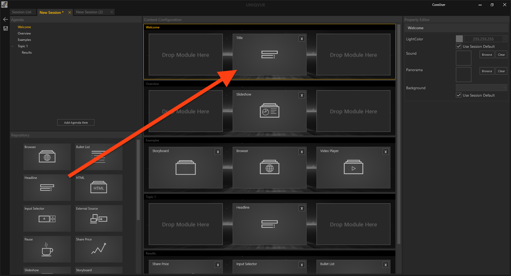

Session Workflow

Mit den konsistenten Bedienelementen, die sich rechts außen am Dokumentenfenster befinden, kann man einfach eine Session bearbeiten, erstellen, duplizieren oder löschen.
Zur Erinnerung noch einmal Icons und ihre Funktion:
- Der Pfeil der nach links zeigt, führt zurück in das Menü von dem aus man gestartet ist.
- Der Stift ist das Symbol, um eine ausgewählte Session zu bearbeiten.
- Das Dokument mit dem Pluszeichen ist zum Erstellen einer neuen Session.
- Der Dokumentenstapel darunter ist zum Duplizieren einer ausgewählten Session.
- Mit dem Mülleimersymbol löscht man eine ausgewählte Session.
Erstellen einer neuen Session:
Sie erstellen eine neue Session durch Klicken auf das Dokument mit dem Pluszeichen. Mit Doppelklick auf den Namen können sie der Session einen Namen geben. Diese Session ist zunächst leer. Sie enthält außer einem Default Style und einer Default Toolbox keine weiteren Inhalte. Das können sie jetzt ändern, indem sie auf den Stift zum Bearbeiten der Session klicken. Alternativ kann die Session, ganz rechts im Inspektor, durch Klicken auf ‘Edit Session’ bearbeitet werden. Beide Vorgänge leitet weiter zum Session Editor. Dieser wird als neuer Tab erzeugt, welcher den Namen der aktuell zu bearbeitenden Session trägt. Beliebig viele Tabs also Sessions können gleichzeitig geöffnet sein. Das Sternsymbol (‘*’) erscheint außerdem im Session Namen, um einen Indikator dafür zu liefern, ob eine Session noch ungespeicherte Änderungen enthält.

Zur Erinnerung - Der Session Editor besteht aus vier Bereichen:
- Agenda: Dieser zeigt die Struktur der Agenda als hierarchischen Baum.
- Repository: Enthält alle verfügbaren Module wie Slideshows etc.
- Content Configuration: Repräsentiert die Platzierung von Modulen auf dem Display Setup
- Property Editor: Hier werden die Eigenschaften der Module wie sie in Kapitel [Module](module.md) erläutert werden gezeigt. Darüber hinaus werden auch die Eigenschaften der übergeordneten Agenda gezeigt. Einzelne Agendapunkte können individuelle Eigenschfaften besitzen. Dazu zählen:
- Light Color: Setzt die Lichtfarbe in ihrem Raum.
- Sound: Hier können sie einen Sound auswählen, der abgespielt wird beim ereichen des Agendapunktes
- Panorama: Alternativ zum 3D-Hintergrund können sie hier auch große Panoramen als Hintergrund audwählen.
- Background: Alternativ zum 'Default' Hintergrund, können sie hier aus einer Auswahl anderer 3D-Hintergründe auswählen und explizit für diesen Agendapunkt festlegen
Eine Agenda Anlegen:
Im Agenda Tree füllen sie nun ihre Agenda mit Punkten. Um einen neuen Punkt in der Hierarchie zu erstellen, drücken sie den Button ‘Add Agenda Item’. Durch Doppelklick auf den Namen des neu erstellten Agenda-Punktes, kann dieser geändert werden. Im Agenda Item Editor erscheint nun ein neues Element, welches das Display Setup des Showrooms repräsentiert. Unter einem Agenda-Punkt können sie zudem weitere Agenda-Unterpunkte erzeugen. In der Hierarchie der Agenda werden Unterpunkte eingerückt dargestellt.
Die Agenda mit Modulen füllen:
Ziehen sie aus dem Agenda Repository Module ihrer Wahl per Drag and Drop in ein Element im Agenda Item Editor. Entsprechend des Display Setups können Module innerhalb des Elements platziert werden. So können mehrere Module auf verschiedene Displays verteilt sein. Füllen sie so ihre gesamte Agenda.
Module mit Inhalten füllen:
Klicken sie auf ein Modul innerhalb des Agenda Item Editor. Der Property Editor am rechten Rand zeigt ihnen entsprechend des Moduls dessen Eigenschaften an. In Kapitel Modul sind alle Eigenschaften jedes Moduls detailliert erläutert. Durch Klicken auf eine Eigenschaft öffnet sich der Asset Browser. Importieren sie Bilder, HMTL-Dateien, Videos und viele andere Inhalte und wählen sie diese aus. Wie der Asset Browser genauer funktioniert, lesen sie in Kapitel Asset Browser.
Speichern:
Ist die Agenda nach ihren Wünschen gefüllt muss diese gespeichert werden. Wie erwähnt zeigt das Sternsymbol im Tab (‘*’) an, ob es ungespeicherte Änderungen gibt. Durch klicken auf das Diskettensymbol oder Drücken der Tastenkombination STRG + S wird die Agenda gespeichert.
Eine Toolbox, einen Style und ein Team der Session zuweisen:
Nach dem Speichern navigieren sie zurück in die Session Liste. Der Listeneintrag einer jeden Session enthält die Spalte ‘Toolbox’, ‘Style’ und 'Team'. Die Standardauswahl ist immer ‘Default Style’ und ‘Default Toolbox’. 'Team' ist per Default nicht zugewiesen. Durch Klicken auf diese, können sie aus einer Liste von Styles,Toolboxes und Teams auswählen, die sie zuvor erstellt haben. In den Kapiteln Toolbox Workflow, Style Workflow und Team Gallery gibt es detaillierte Beschreibungen dazu.
Sessions organisieren und freigeben:
Vergeben sie in der Spalte ‘Category’ ihrer Session eine Kategorie. Durch Setzen des Hakens bei ‘Released’ wird die Session im Showroom Dashboard innerhalb eines Ordners, der den Namen der Kategorie trägt, verfügbar gemacht. In Kapitel Showroom wird u.a. erläutert, wie sie Sessions laden können.
Tipps und Tricks:
Sie können ganz klassisch Agenda Module oder ein Listenelement aus der Agendahierarchie mit den Tastenkombinationen STRG + C und STRG + V in den Zwischenspeicher kopieren und wieder einfügen.